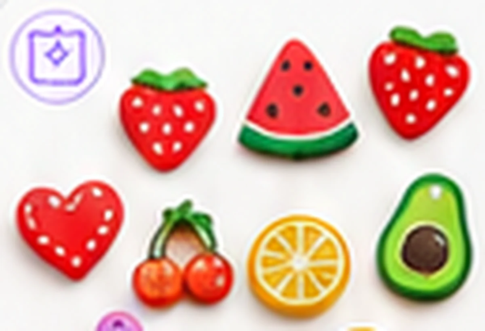
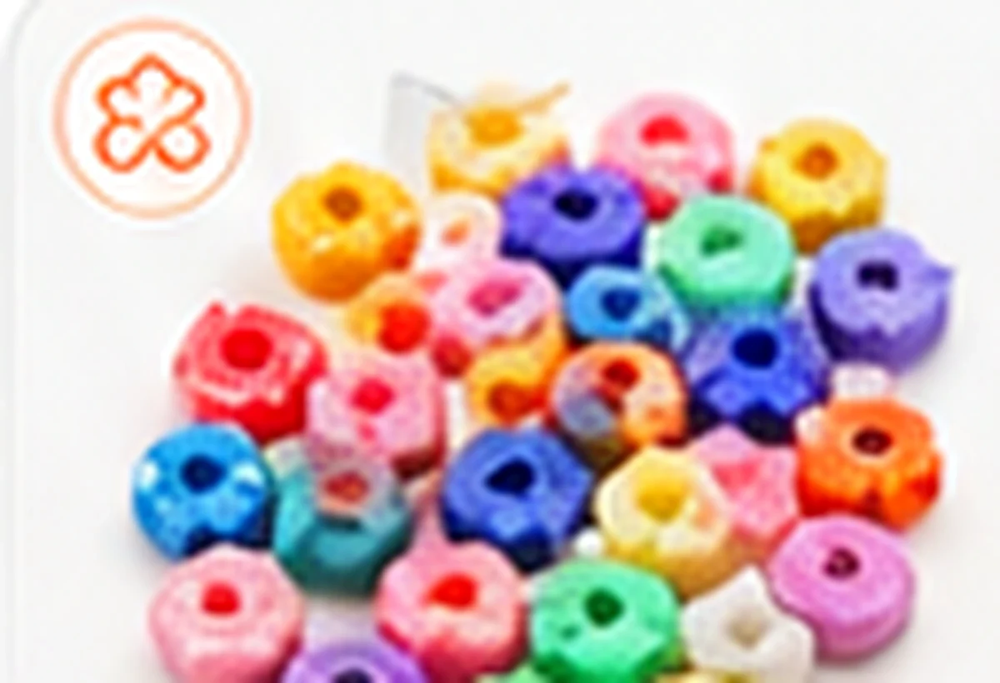
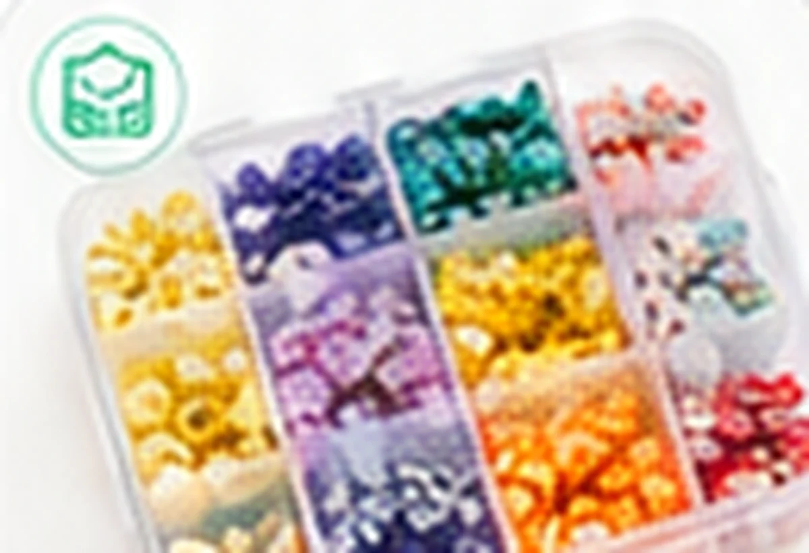
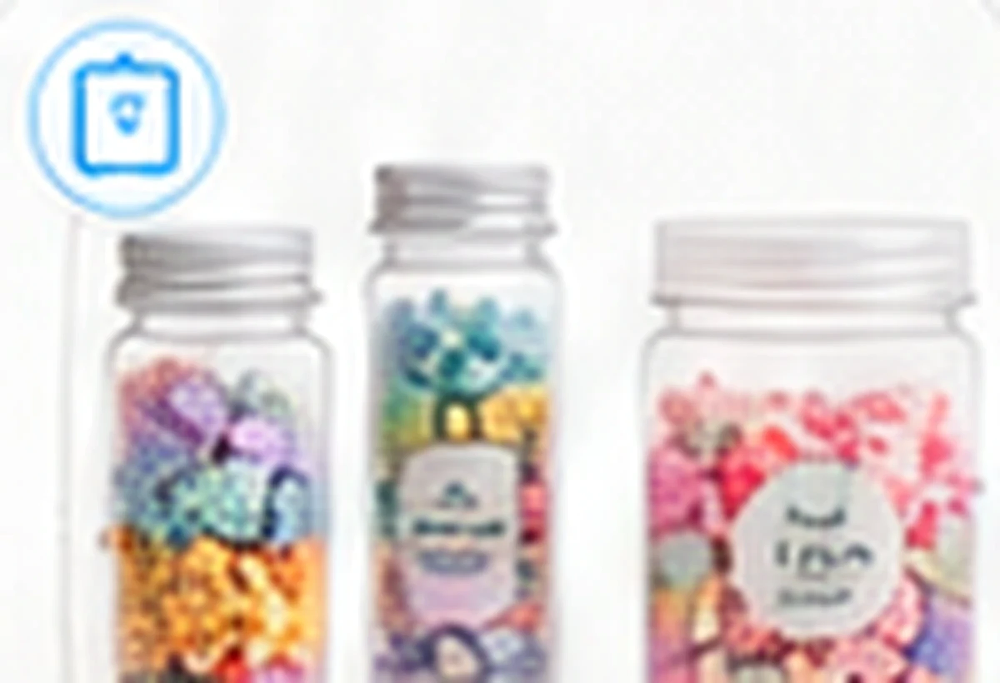
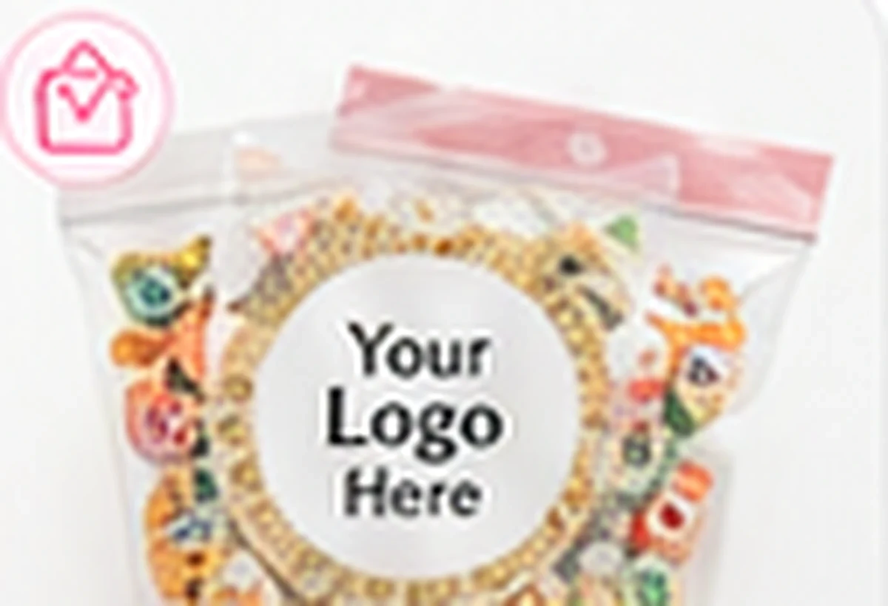
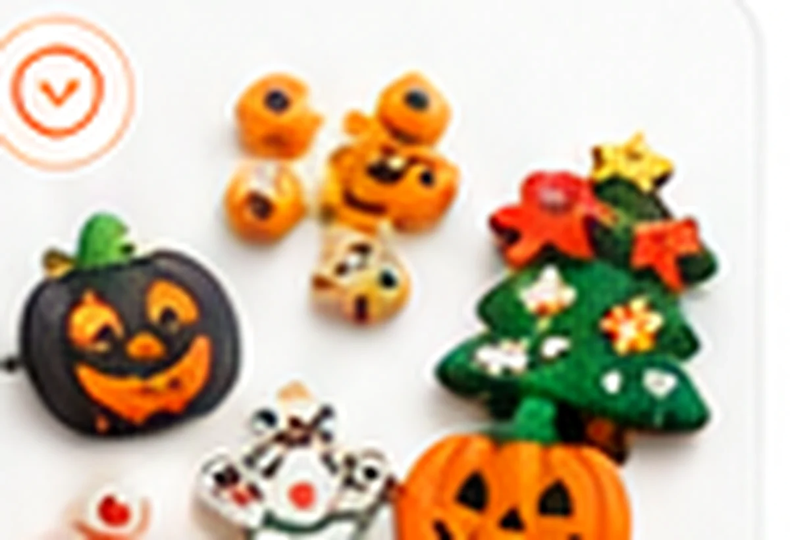

Acrylic Beads & Jewelry Components
Bulk acrylic beads, letter beads, spacer beads and colorful jewelry components for bracelet making, kids craft kits and private label DIY supply brands.

Acrylic Beads: All Stock Items
Every item below is in production today — real SKU, real photo. Quote any SKU directly by button or WhatsApp.
What Buyers Need to Confirm
Confirm these specifications before sampling or bulk quotation — they decide price and lead time.
| Material | Acrylic / plastic beads and decorative jewelry components. |
|---|---|
| Common Style | Letter beads, round beads, spacer beads, shaped beads and colorful mixed components. |
| Finish | Opaque, transparent, AB-style, jelly, pastel and color-matched options. |
| Packaging | Bulk bag, sorted bag, box, retail kit or private label packaging. |
| Customization | Color theme, letter selection, shape mix, packaging and label. |
| Applications | Bracelet making, jewelry kits, kids DIY kits, keychains and accessories. |
Fast quote checklist
- Target application and market
- Shape / color / size / mix ratio
- Quantity and packaging method
- Reference image or sample
- Destination country and launch timeline
Make This Category Fit Your Brand
Most buyers need more than stock items — start from any of these six customization directions.

Custom Shapes
Develop fruit, flower, animal, holiday, zodiac or brand-specific shapes based on reference sketches or samples.

Custom Colors
Match Pantone-like color direction, seasonal palettes, pastel themes, transparent finish or AB-style effects.

Custom Mixes
Build a sellable mix by use case, size, color ratio, theme and packaging weight.

Packaging Solutions
Choose OPP bag, PET bottle, wide-mouth jar, compartment box, retail box or carton packing.

Logo & Labeling
Add private label stickers, logo cards, thank-you cards, SKU labels and barcode-ready packaging.

Seasonal Collections
Plan Christmas, Halloween, Valentine, Easter, summer and back-to-school craft supply series in advance.
Common Questions for This Product Category
MOQ, customization, safety and sampling — answered before you write to us.
What hole sizes do your beads have?
Standard round and letter beads run ~1.2–2mm holes — fine for elastic cord and beading wire. Larger-hole European-style beads are available for cord and kids’ kits; confirm hole size per SKU when ordering.
Can letter beads be customized?
Stock covers A–Z white-on-round plus color mixes. Custom runs can fix specific letters, colors or ratios — useful for name-bracelet kits where vowels run out first.
What does the AB finish mean?
AB (aurora borealis) is an iridescent coating that shifts color in light. We stock opaque, transparent, AB-coated and matte finishes — mixable in one custom assortment.
How are beads packed for wholesale?
Bulk poly bags by weight (typically 500g), or retail-ready bottles, compartment kits and private label bags. Low-breakage carton packing is standard for export.
Are your beads suitable for children’s jewelry kits?
Yes, with correct labeling. Batch test reports (EN 71, ASTM F963, CPC) are available on request, and small-parts warnings for under-3s belong on every kids’ kit.
Read Before You Order
How to Build a Private Label Craft Supply Collection
SKU selection, packaging tiers, label requirements, margin math and a realistic timeline for private label craft supplies.
Read guide →Best Packaging for DIY Craft Supplies: Bags, Bottles, Jars & Boxes
Unit cost bands, shelf appeal, filling speed and freight impact for OPP bags, PET bottles, jars, compartment boxes and gift boxes
Read guide →When to Order Christmas & Halloween Craft Collections
order deadlines by season, sea vs air cutoffs, sample timing and reorder windows for holiday craft supplies.
Read guide →Seasonal Craft Collections
Halloween, Christmas, Easter, Valentine and summer themes, with order-deadline months mapped per holiday in the seasonal calendar.
Browse collections →